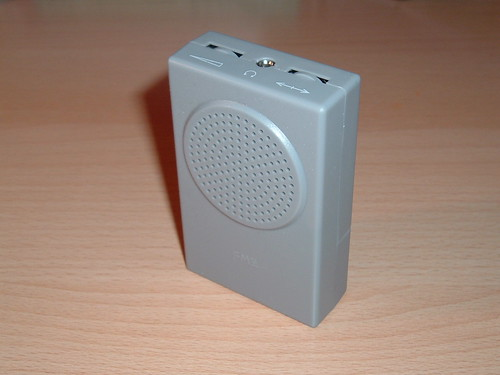
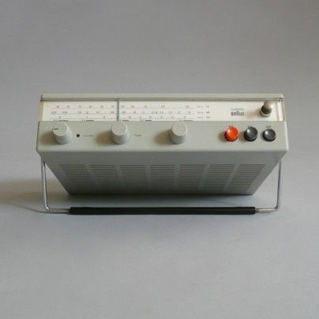

/week one: final project ideation and planning
# the three ideas so far...
# ---------------------------------
numero uno: music meditation device
being at the graduate school of design, you get a desk in 'the trays', the tiered floors of desk cubicles for all students. it's beautiful but noisy. there are constantly conversations, people using the toilets and ongoing construction. to block out the noise, listening to music can be great but i often find it distracting. earplugs can work too but i have a mild form of tinnitus (thanks to some bad sound systems). the light buzzing i hear is worst when i'm in quiet environments, i'm tired and i'm trying to concentrate i.e. studying. i don't want a noise cancelling but noise conversion.
what i want to build is a device that takes the sounds around me and turns it into music for studying. i want to connect to headphones and intentionally design the music to align with the pitch at which i hear ringing. there are two main sources of inspiration: (1) the buddha machine and (2) the braun radio the buddha machine generates sounds through loops. the braun radio is an icon of early industrial design that is beautiful to just have on your desk.
 
numero due: soil moisture and hygrometer device
i havelep; i canworkart with little windshield wipers on them that i can turn on and off using a button.
numero tre: ice massager